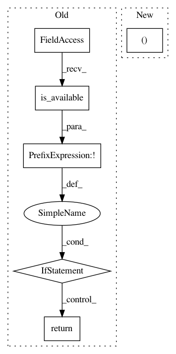

f0e68404d26a67481de32fdb138be171a23ac2aa,tests/test_ops/test_nms_rotated.py,TestNmsRotated,test_ml_nms_rotated,#TestNmsRotated#,7
Before Change
class TestNmsRotated(object):
def test_ml_nms_rotated(self):
if not torch.cuda.is_available():
return
from mmcv.ops import nms_rotated
np_boxes = np.array(
[[6.0, 3.0, 8.0, 7.0, 0.5, 0.7], [3.0, 6.0, 9.0, 11.0, 0.6, 0.8],
[3.0, 7.0, 10.0, 12.0, 0.3, 0.5], [1.0, 4.0, 13.0, 7.0, 0.6, 0.9]
After Change
boxes = torch.from_numpy(np_boxes).cuda()
labels = torch.from_numpy(np_labels).cuda()
dets, keep_inds = nms_rotated(boxes[:, :5], boxes[:, -1], 0.5, labels)
assert np.allclose(dets.cpu().numpy()[:, :5], np_expect_dets)
assert np.allclose(keep_inds.cpu().numpy(), np_expect_keep_inds)
In pattern: SUPERPATTERN
Frequency: 3
Non-data size: 6
Instances
Project Name: open-mmlab/mmcv
Commit Name: f0e68404d26a67481de32fdb138be171a23ac2aa
Time: 2020-12-17
Author: 12756472+wangruohui@users.noreply.github.com
File Name: tests/test_ops/test_nms_rotated.py
Class Name: TestNmsRotated
Method Name: test_ml_nms_rotated
Project Name: open-mmlab/mmcv
Commit Name: f0e68404d26a67481de32fdb138be171a23ac2aa
Time: 2020-12-17
Author: 12756472+wangruohui@users.noreply.github.com
File Name: tests/test_ops/test_nms_rotated.py
Class Name: TestNmsRotated
Method Name: test_nms_rotated
Project Name: inferno-pytorch/inferno
Commit Name: 45ca429994196d479bef22edbbf36dc9698350d2
Time: 2018-12-19
Author: steffen.wolf@iwr.uni-heidelberg.de
File Name: tests/test_utils/test_model_utils.py
Class Name: ModelUtilTester
Method Name: test_model_tester_cuda